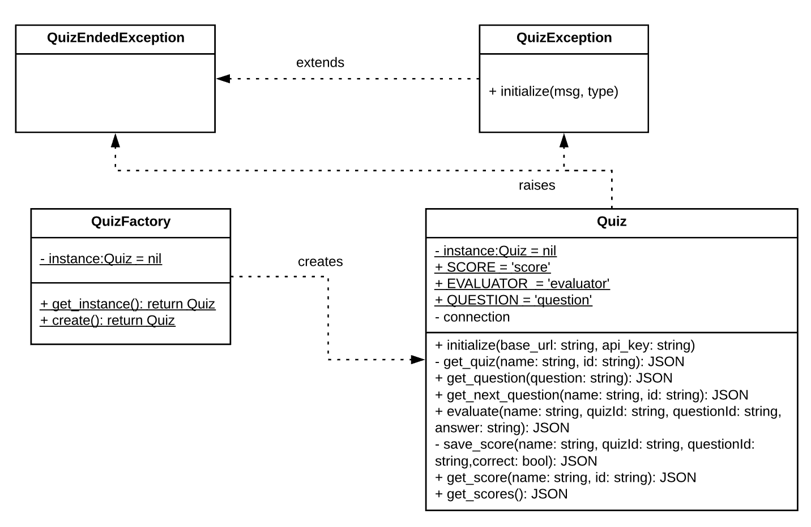
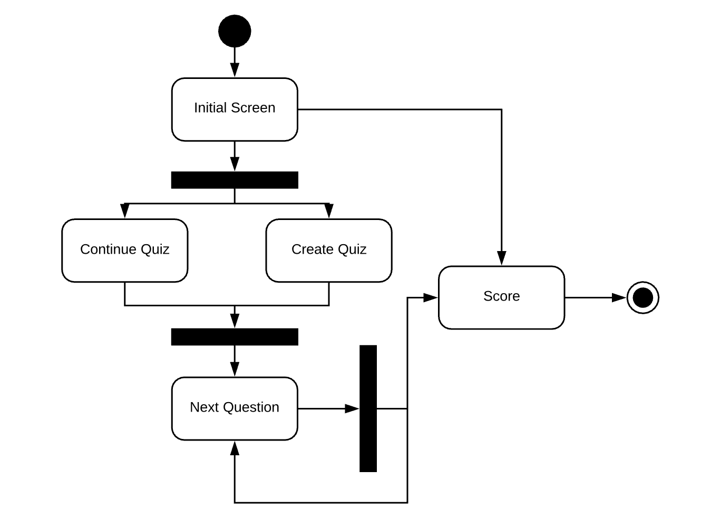
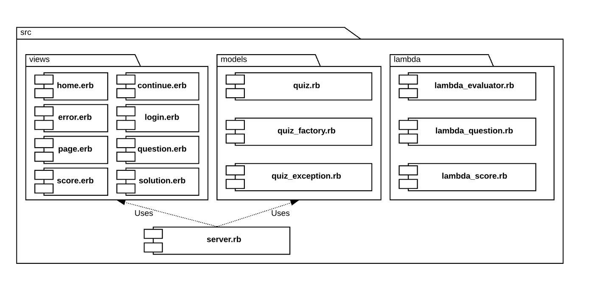
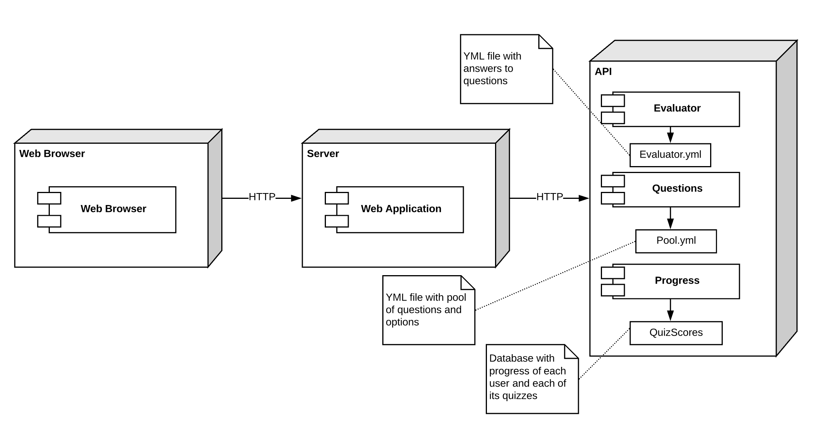
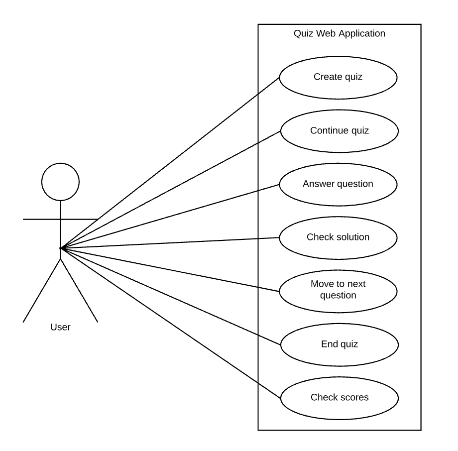

Quiz Application with Microservices¶ ↑
This documentation was developed as part of the final project activity for the Software Design and Architecture course (TC3049), at the Tecnológico de Monterrey, Campus Estado de México.
Authors¶ ↑
-
A01372812 José Javier Rodríguez Mota
-
A01379228 Adrián Méndez López
| Date |
June 9th, 2020 |
Overview¶ ↑
As our final project for the Software Design and Architecture class we did a Quiz Application with a Microservices REST API using AWS platform.
Documentation¶ ↑
To reload the documentation, install the Hanna Nouveau Ruby gem:
$ gem install hanna-nouveau
The directory structure for the application and its documentation is as follows:
microservices/
├─ doc/ Folder produced by RDoc.
├─ img/ Folder for the documentation’s image files.
└─ src/ Folder for the application’s source code.
├─ public/ Folder for the server’s public documents.
│ └─ images/ Folder for the application’s image files.
├─ models/ Folder for the application’s models.
├─ lambda/ Folder for the application's API running in AWS
└─ views/ Folder for the application’s views (ERB files).
The builddocs.sh shell script contains the required instructions to produce the RDoc documentation. Run the script from the microservices directory, typing at the terminal:
$ bash builddocs.sh
The root of the documentation should now be available at: microservices/doc/index.html
Use any web browser to see the result.
Installing and Running the Application¶ ↑
Install the required gem packages:
$ gem install faraday faraday_middleware sinatra
You need to have Ruby 2.6 or more recent and the Sinatra gem installed in your system to run the Quiz web application. To run the server type the following command at the terminal from the microservices/src directory:
$ ruby -I . -w server.rb
Afterwards, point your web browser the server’s root URL port 4567 if it is not running on Cloud 9.
4+1 Architectural View Model¶ ↑
We used Philippe Kruchten’s “4+1 View Model” to document our project’s architecture. We produced the UML diagram for each view in order to explain them.
Logical View¶ ↑
The logical view contains information about the various parts of the system and it is modeled using class diagrams. The class diagram shows the classes that were implemented and their relationships: QuizFactory, Quiz, QuizException and QuizEndedException.

Process View¶ ↑
The process view focuses on the runtime behavior of the system and it is modeled using activity diagrams. The activity diagram shows the flow that the user will follow when using the application. The user can go through the stages of: Initial Screen, Create/Continue quiz, Next Question and Score.

Development View¶ ↑
The development view focuses on software modules and subsystems and it is modeled using package diagrams. The package diagram shows how the files are stored in the src directory. The src directory contains the server.rb file and 3 folders: views, models and lambda. Each folder contains their respective files.

Physical View¶ ↑
The physical view describes the physical deployment of the system, revealing which pieces of software run on what pieces of hardware and it is modeled using deployment diagrams. The deployment diagram shows how the web browser, the server and the API works together in order to run the application.

Use Case View / Scenarios¶ ↑
This view describes the functionality of the system from the perspective from outside world and it is modeled using use case diagrams. The Use Case diagram shows how the user interacts with the Quiz Web Application. The user can create/continue/end a quiz, answer questions, check the solutions and scores.

Patterns Used¶ ↑
We used the following patterns:
-
Domain-Specific Language: The
server.rbfile consists of a series of Sinatra routes. Sinatra is a DSL for creating web applications in Ruby. -
Model-View-Controller: The application follows the classical web implementation of the MVC architectural pattern. The models (
.rbfiles) and views (.erbfiles) are stored in the correspondingmodelsandviewsdirectory. The controller is contained inserver.rbfile. -
Simple Factory: The
QuizFactoryis used to createQuizinstance with the correct parameters for the API connection. -
Singleton: The
Quizis a singleton class that will raise an exception in case someone tries to create a second instance.
References¶ ↑
-
Ph. Kruchten. The 4+1 View Model of Architecture. IEEE Software, vol. 12 (6), pp. 45-50, 1995. http://www.ics.uci.edu/~andre/ics223w2006/kruchten3.pdf Accessed April 11, 2019.
-
R. Olsen. Design Patterns in Ruby. Addison-Wesley, 2007.
-
Ruby-Doc.org. RDoc Markup Reference. http://ruby-doc.org/stdlib-2.6.2/libdoc/rdoc/rdoc/RDoc/Markup.html Accessed June 3rd, 2020.
-
Sinatrarb.com. SINATRA Documentation. http://sinatrarb.com/documentation.html Accessed June 3rd, 2020.